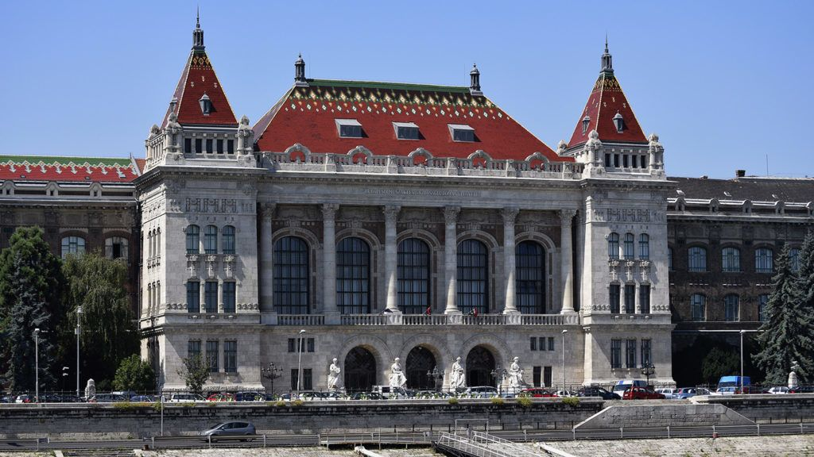

Tanulmányaimat Pécsett kezdtem el a Köztársaság Téri Általános Iskolában, ide 6 évig jártam. Mindegyik évben kitűnő lettem.
Utána sikerült bejutnom egy hatosztályos középiskolába, a Pécsi Janus Pannonnius Gimnáziumba, ahol szintén 6 évig tanultam.
A ballagás és az érettsegi után következett az egyetem. Felvételt nyertem a Budapesti Műszaki és Gazdaságtudományi Egyetemre, ahol jelenleg is tanulok. 